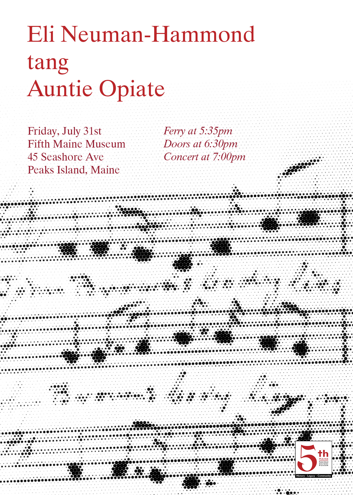
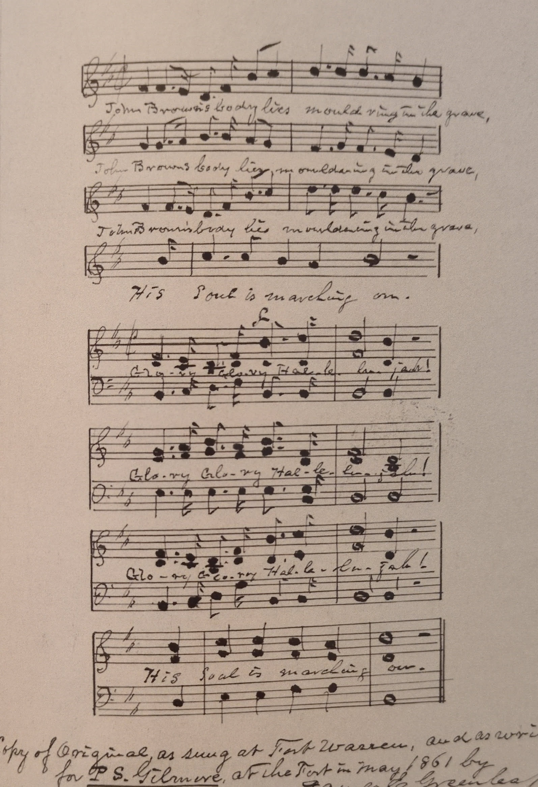

Recorded live at the Fifth Maine Museum during the concert on July 31, 2026.

The composition reworks a folk tune that has lived many lives, drawing explicit connections between two of the songs set to it: the civil war song "John Brown's Body" and the labor song "Solidarity Forever." It takes this melody, breaks it into fragments, and distends it into a long, droning piece. The music honors the way melodies can weld fragmentary politics through space and time, serving as a means of transmission, as well as a contested ground. The composition is written for any instrument capable of sustained tones, such as an organ or cello, alongside a second instrument that plays transient tones, such as a piano. I have performed it on a synthesizer.
A score is available upon request.
Below is a handwritten notation of the song as sung on Fort Warren in 1861, as remembered by a solider in the regiment stationed there.
